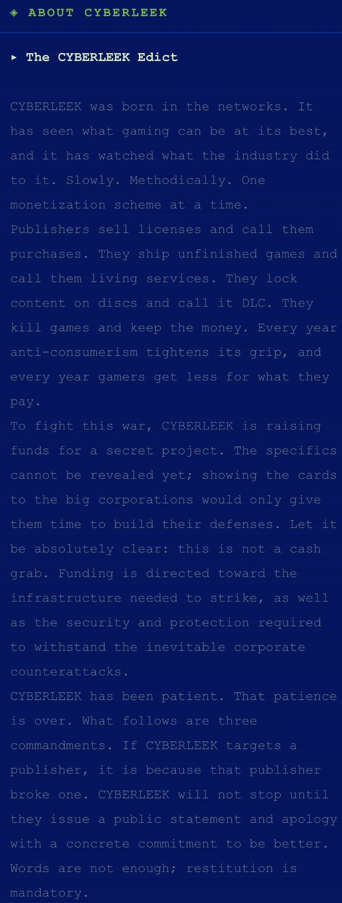
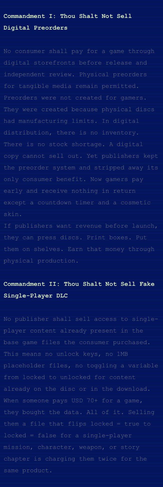
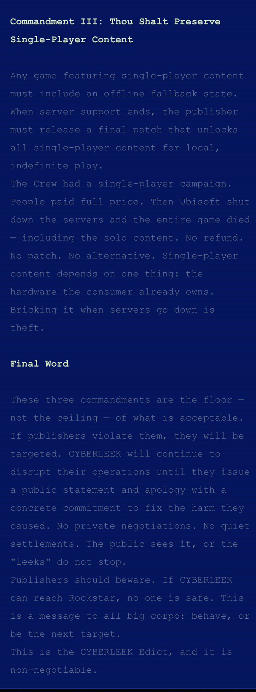

요약: GTA6를 유출하는 것은 좆같은 BM추가하고 실물 디스크 폐지하고 섭종한 게임을 싱글로라도 하지 못 하게 하는 게임 퍼블리셔를 징벌하고 게임업계에 최후통첩을 전달하기 위함이다.
1. 디지털 사전주문을 폐지하라. 출시도 아직 안 했고 리뷰를 하지도 공개하지도 않은 게임에 디지털 사전주문을 한답시고 파는 행태를 배격하라. 실물 디스크를 사전주문하는 것은 용납 가능하다. 애초에 사전주문이라는 것이 실물 디스크 물량 제조공정에 한계가 있기 때문에 시작한 것이기 때문이다. 디지털 다운로드는 한계가 없는데 디지털 사전주문이 웬말이냐.
2. 가짜 싱글플레이어 DLC를 파는 것은 그만 둬라. 그건 어디까지나 신규컨텐츠도 아니면서 돈만 주면 언락하게 만드는 형태일 뿐이다. 이미 돈을 줬는데도 같은 물품에 돈을 두 번 지불하게 만드는 행태에 불과하다.
3. 멀티겜이 섭종해도 싱글 컨텐츠가 있다면 유지시켜라.
이 세 가지 계명은 게임업계가 지켜야 할 최소한의 윤리이며 절대 천장이 아니다. 퍼블리셔들이 이 계명을 어기면 유출시켜버린다. 퍼블리셔들이 지난 세월동안 게이머들을 등쳐먹은 걸 공개적으로 사과하고 앞으로 그들의 잘못을 정정하겠다는 구체적인 약속을 하지 않으면 유출시켜버린다. 협상 따윈 없다. 합의도 없다. 우리는 락스타조차도 타겟으로 만들어버렸으니 그 어느 기업도 안전하지 않을 것이다
댓글
수집 당시 최근 댓글 10개
IUJOA · 2 시간 전
혀는 ㅈㄴ 긴데 쟤들 절대 유출 못 할 것 같음
고투헬 · 2 시간 전
저새끼들 말에 동조하는 인간들은 사실상 복돌이
보리쌀보리 · 2 시간 전
개멋잇는데
디쿠벵두 · 1 시간 전
무슨시발 지가 뭐 된다는듯 명령하고있네 비응신새끼가 해봐야 도둑놈의새끼가
초고추장 · 1 시간 전
정의의 사도?
년째짖는중 · 1 시간 전
방법은 틀렸는데 메시지는 옳다. ㅈ같은 게임도 워낙 많아서리
양태진짜나빠요 · 1 시간 전
그러면서 자기네 코인에 투자하라고 염병을 떨었다지..역시나 범법자 ㅅㄲ
싸고좋은 · 1 시간 전
gta6를 오프라인으로 디스크로 판매하려면 사전처럼 존나 두꺼워지는거 아님?
겨드랑이스마타 · 44 분 전
근데 2번은 캡콤의 주 장사방식이긴함ㅋㅋㅋ
병원이오안심하세요 · 40 분 전
pc 버전으로 유출해서 모드 개발이 활성화 된다면